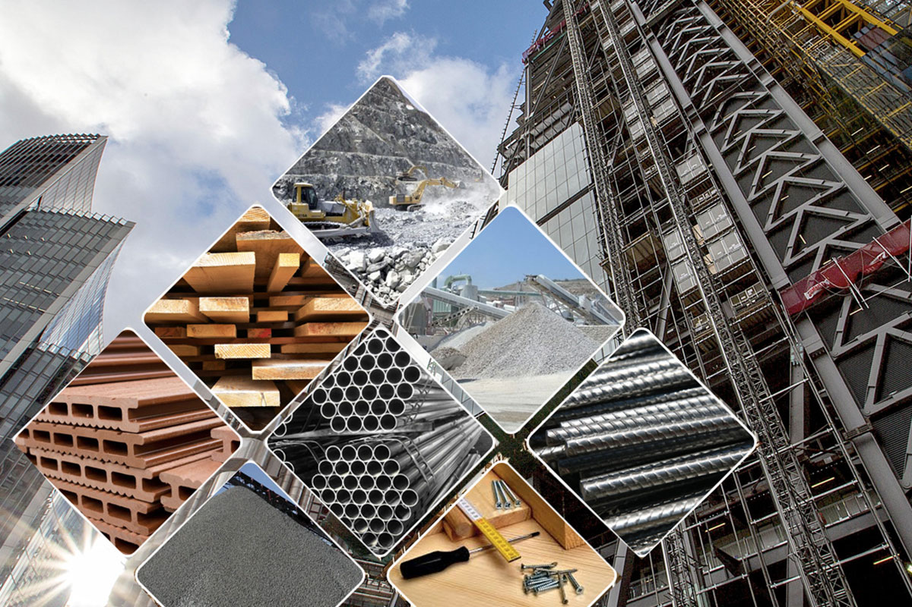

Строительство

Строительство – создание (возведение) зданий, строений и сооружений.
В широком смысле к строительству (как отрасли) также относят капитальный и текущий ремонт зданий и сооружений, а ещё их реконструкцию, реставрацию и реновацию.
Процесс строительства включает в себя все организационные, изыскательские, проектные, строительно-монтажные и пусконаладочные работы, связанные с созданием, изменением или сносом объекта, а также взаимодействие с компетентными органами по поводу производства таких работ.
Результатом строительства считается возведённое здание (сооружение) с внутренней отделкой, действующими инженерно-технологическими системами и полным комплектом документации, предусмотренным законом.
Отраслевая классификация объектов строительства:
- Объекты промышленного строительства (заводы, фабрики)
- Объекты гражданского строительства (жилые дома, общественные здания, торговые комплексы, склады)
- Объекты сельскохозяйственного строительства
- Объекты транспортного строительства (дороги, линейные объекты, мосты, тоннели)
- Объекты военного назначения (военное строительство)
- Объекты гидротехнического назначения (плотины, дамбы, каналы, берегоукрепительные сооружения и устройства, водохранилища)
- Объекты гидромелиоративного назначения (системы орошения, осушения)